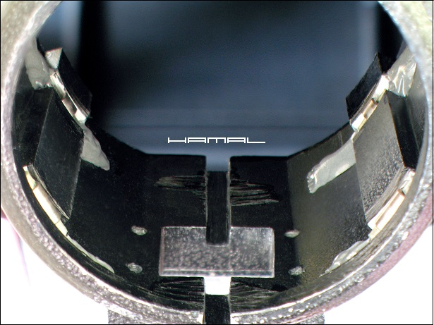
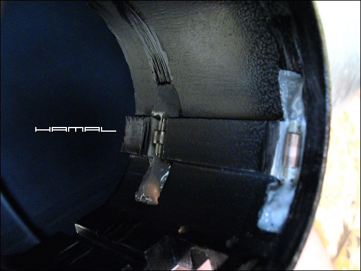
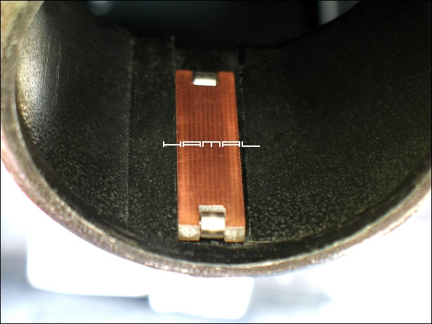
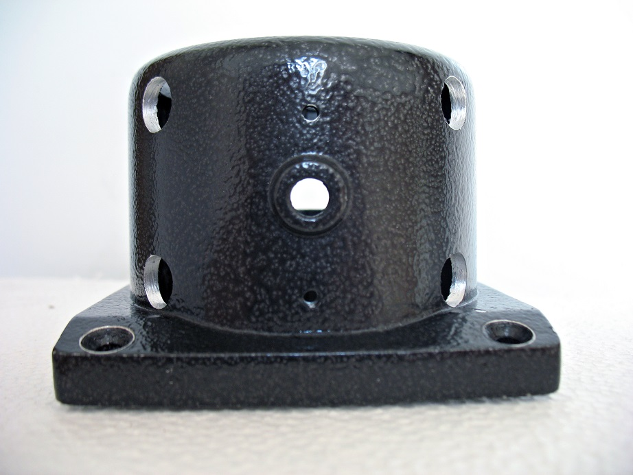
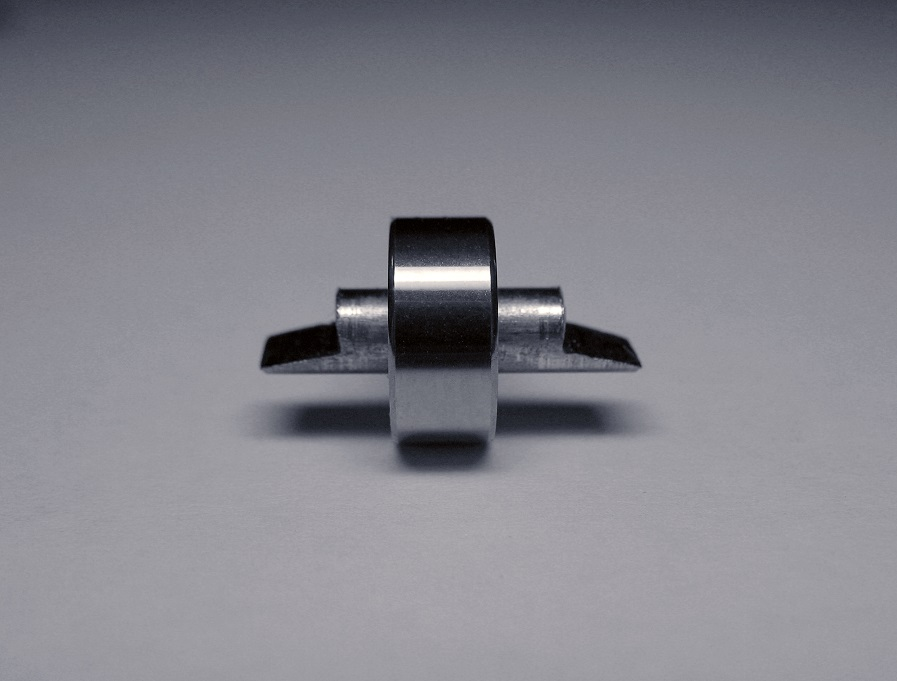
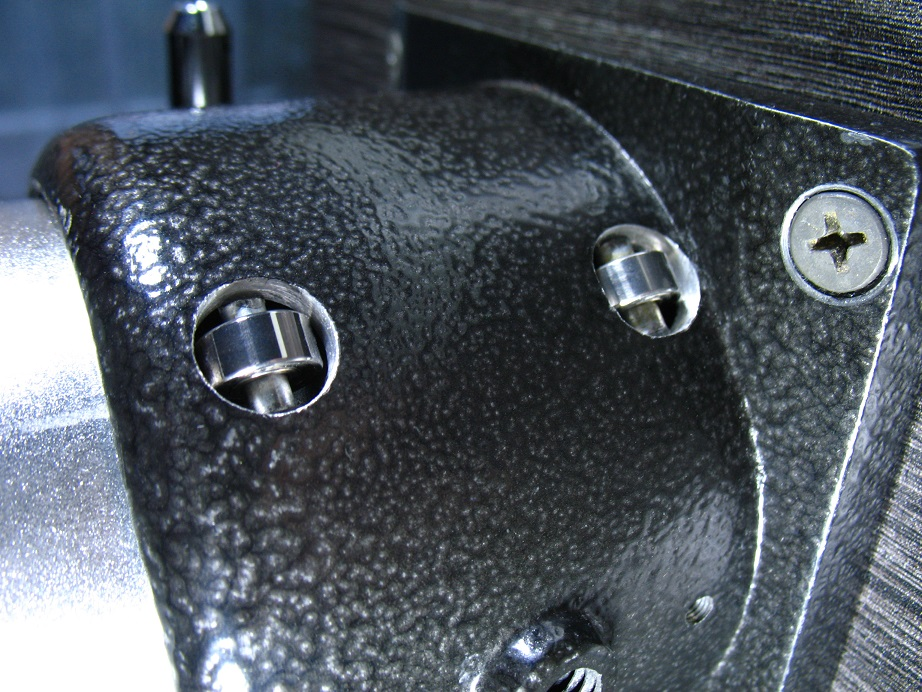

.
Wyciąg Okularowy Sky-Watcher Rack&Pinion 1,25" / 2"
|
Upodobałem sobie Wyciąg Okularowy Sky-Watcher Rack & Pinion 1,25" / 2.25", gdyż posiada Drawtube (tuleję ruchomą wyciągu) o średnicy 2,25 cala, co przy moim zacięciu konstruktorskim, pozwala zmieścić w nim więcej różnych rzeczy, niż przy ciasnych 2-calowych wersjach. Nadto posiada on bardzo dobry stosunek cena/solidność konstrukcji, niestety jego kultura pracy, oraz sztywność trzymania Drawtube, pozostawiają wiele do życzenia, konieczne więc jest dokonanie modyfikacji, które opisałem poniżej. Po odrobinie wysiłku stajemy się właścicielami naprawdę dobrego wyciągu okularowego, za bardzo skromne pieniądze. MODYFIKACJA WYCIĄGU OKULAROWEGO Sky-Watcher Rack & Pinion 1,25" / 2" - WERSJA 1 Po usunięciu oryginalnych teflonowych podkładek poślizgowych, w miejscu, gdzie były przyklejone, wykonałem w poprzek cztery rowki o szerokości 6mm i umieściłem w nich rolki, a po usunięciu dociskającego z góry plastiku, zastąpiłem go wózkiem z dwoma rolkami.  Rolki to przecięte na pół tuleje od magnetofonów kasetowych, to w nich była osadzona ośka z kołem zamachowym ciągnąca taśmę. Rowki na tuleje wykonałem flexem (szlifierka kątowa) przy pomocy zużytej tarczy, chodziło o to, aby jej średnica była na tyle mała, by się zmieściła w obudowie wyciągu. Próbując powielić mój pomysł, należy zachować niebywałą ostrożność, gdyż chwila nieuwagi przy tak dużej mocy narzędzia może grozić wypadkiem (np. gdy tarcza zakleszczy się w środku i albo zacznie kręcić całym wyciągiem, albo wyrwie nam szlifierkę z rąk). Oczywiście są też modelarskie narzędzia mniejszej mocy, jednak wykonanie stosownych rowków za ich pomocą będzie nas kosztować znacznie więcej czasu. Tuleje na oryginalnych magnetofonowych przyciętych na stosowny rozmiar ośkach umieściłem na poxipol w wykonanych rowkach.  Wózek górny wykonany z laminatu ze sklepu z elektroniką i z rolek jw.  MODYFIKACJA WYCIĄGU OKULAROWEGO Sky-Watcher Rack & Pinion 1,25" / 2" - WERSJA 2 Powyższa modyfikacja okazała się udana i działa w jednym z teleskopów do dziś, ale zaszła potrzeba wejścia w posiadanie drugiej sztuki wyciągu Sky-Watcher Rack&Pinion 1,25" / 2", do drugiego teleskopu, który także postanowiłem przerobić, leczy tym razem, aby nie być monotonnym, w troszkę odmienny sposób :). Po namyśle zdecydowałem, że od góry w obudowie wywiercę cztery 10mm otwory a w nich, na odpowiednio spiłowanych ośkach, umieszczę 4 łożyska. W tym układzie ruchomą tuleję do łożysk będzie od dołu dociskać ośka pokrętła z zębatką. Jak pomyślałem, tak zrobiłem, wyciąg działa już wiele lat w moim głównym teleskopie, jestem z niego bardzo zadowolony. Co prawda, ostatecznie nie pracuje on tak gładko, jak Crayford, gdyż zębatka posiada swoje "zębatości", jednak zastosowany jako sprzęt astrofotograficzny do motofokusa, swoją sztywnością wynagradza te drobne niedoskonałości.    
|